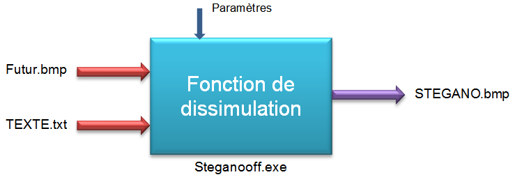
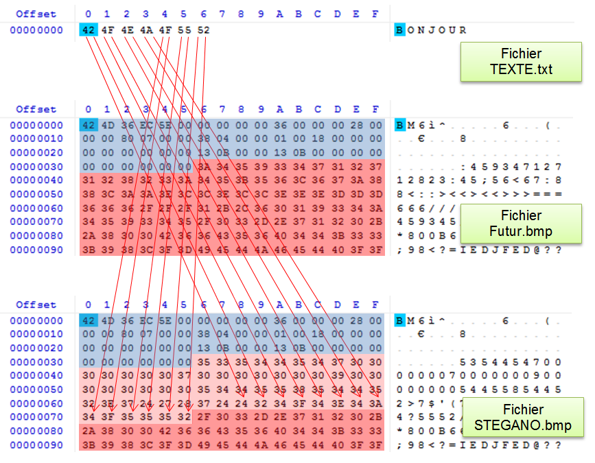
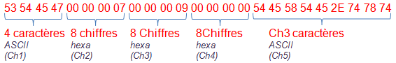

Une technique de STEGANOGRAPHIE
Cette application permet de dissimuler un fichier (texte, image, vidéo, musique,…) dans un fichier image de type BMP.
Un fichier « STEGANO.BMP » a été créé dans le dossier de destination. Cette nouvelle image est l’image initiale « Futur.bmp » dans laquelle on a dissimulé le fichier « TEXTE.txt ».
Un nouveau fichier « TEXTE.txt » a été créé dans le dossier de destination.
 |
|
 |
L'application "Steganooff.exe" a fusionné les deux fichiers "Futur.bmp" qui sert ici de support et le fichier "TEXTE.txt" qui est le fichier à dissimuler pour créer un fichier résultant nommé STEGANO.bmp. Si on visualise le contenu de ces trois fichiers avec un éditeur hexadécimal on s'aperçoit que:
Remarque: Si on décode la première partie de la zone modifiée (paramètres dissimulés) on trouve:  Ce qui donne: S T E G 0 0 0 0 0 0 0 7 0 0 0 0 0 0 0 9 0 0 0 0 0 0 0 0 T E X T E . t x t Interprétation: Ch1= STEG pour signaler que ce fichier contient un autre fichier caché. Ch2= 00000007h Nb d'octets cachés ( ici les 7 octets du fichier TEXTE.txt) Ch3= 00000009h Nb de caractères du nom du fichier (ici les 9 caractères de TEXTE.txt) Ch4= 00000000h Nb d'octets séparant deux octets modifiés (ici aucun) Ch5= TEXTE.txt Nom du fichier caché. Les 14 octets qui suivent (24 32 34 3F 34 3E 34 3A 34 3F 35 35 35 32) contiennent les 7 octets du fichier TEXTE.txt (42 4F 4E 4A 4F 55 52). |